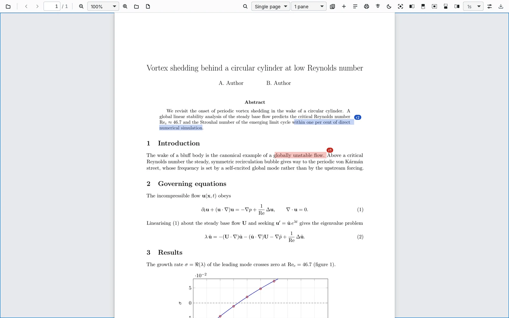
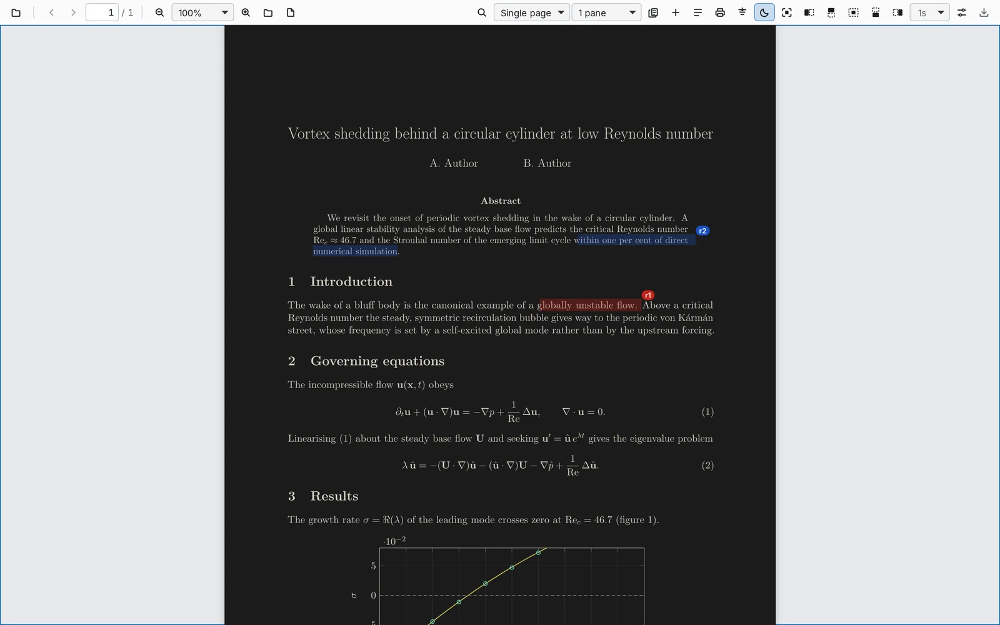
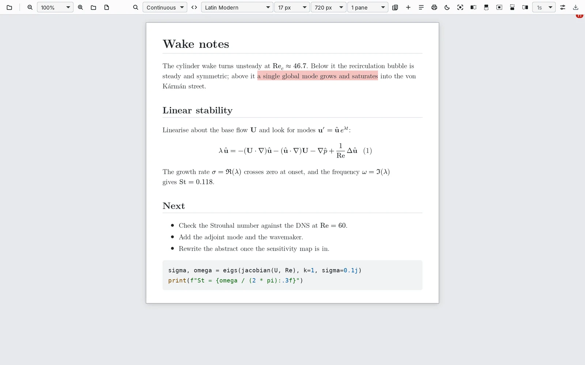
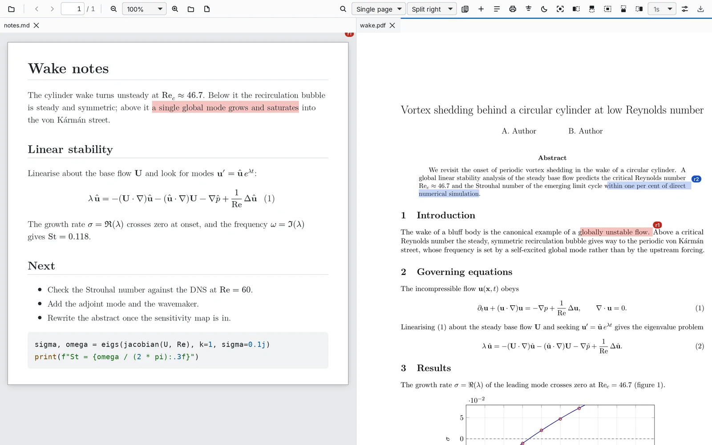
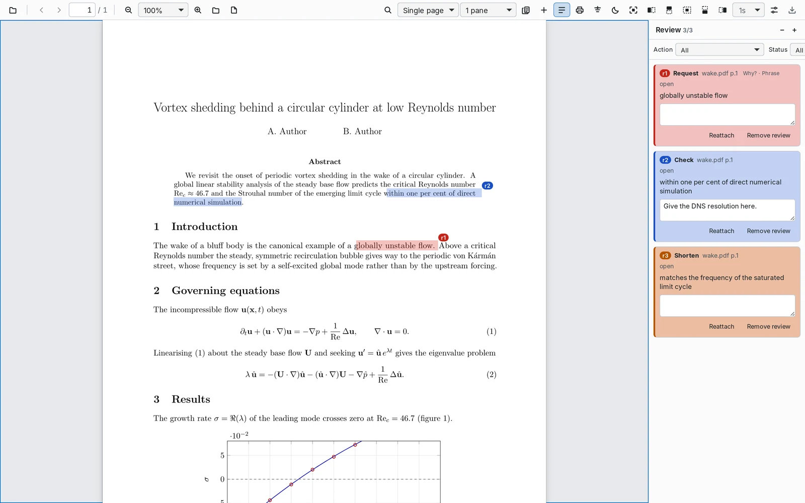

pdf-next shows the PDF your build writes, or the Markdown you are editing, and redraws it every time the file changes: same page, same zoom, same spot. No ribbon, no account, nothing to download after you install it.

Save or rebuild and look. The view catches up within a second and keeps your place, so you never lose the paragraph you were reading.
A build takes a moment to write a PDF. pdf-next waits until the file is whole, and your build can overwrite it at any time.
The window opens at the size of the page. The controls are small, and the page gets the rest.
No account, no cloud, no plugins. Fonts, maths and rendering come in the installer, and your notes are a plain file next to your document.
Start-up and reload times are tested on Windows, macOS and Linux before every release. Memory is measured, not guessed.
Ctrl K finds any command. The scroll wheel works on every menu.
Point it at the PDF your build writes. Every rebuild redraws in place: same page, same zoom, same scroll, sharp on high-density screens. The build can delete and recreate the file; pdf-next waits for it to settle.
Dark, sepia and inverted page modes recolour the page itself.

A .md opens as a reading column in Latin Modern, with equations, coloured code, figures with captions and pages if you want them. Changed paragraphs light up briefly after a save.
Fonts include nine serifs and seven sans faces for long reading, the machine-made faces and GitHub's Monaspace, all shipped with the app.

Ctrl Shift D splits right, Ctrl Shift E splits down. Drag tabs between panes; every pane follows its own file.

Select a passage and say what it needs: shorter, clearer, checked, or why. Whoever edits the source works through the list. Each note is saved in paper_review.json beside the document, stays on its text while the file changes, and in Markdown shows word by word what changed once it is done.

brew install --cask machine-made/tap/pdf-nextOr the universal .dmg from Releases. The app is not notarised yet, so let the first copy through once:
xattr -dr com.apple.quarantine /Applications/pdf-next.appwinget install RicardoFrantz.pdf-nextOr the one-click .exe from Releases: no administrator prompt, no wizard. SmartScreen warns once (More info → Run anyway) until the builds are signed.
sudo install -d -m 0755 /etc/apt/keyrings
curl -fsSL https://machine-made.github.io/pdf-next/pdf-next.asc \
| sudo tee /etc/apt/keyrings/pdf-next.asc > /dev/null
echo "deb [signed-by=/etc/apt/keyrings/pdf-next.asc] https://machine-made.github.io/pdf-next stable main" \
| sudo tee /etc/apt/sources.list.d/pdf-next.list > /dev/null
sudo apt update
sudo apt install pdf-nextUpdates then arrive with apt upgrade. Only amd64 is published.
sudo apt remove pdf-next
sudo rm /etc/apt/sources.list.d/pdf-next.list /etc/apt/keyrings/pdf-next.ascAn .AppImage (chmod +x and run) and an .rpm are on Releases.